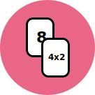

îNMULȚIRE
Mate Cards reprezintă un joc de cărți captivant și educativ, dezvoltat pentru a transforma învățarea tablei înmulțirii într-o experiență distractivă și implicantă pentru copii. Această inovație constă într-un set de 65 de cărți, oferind o abordare plăcută și interactivă pentru a ajuta copiii să învețe rapid și ușor înmulțirea cu cifrele de la 0 la 10.

-

Cărți cu două Fețe
Fiecare carte din setul de joc are două părți, prezentând atât problema, cât și soluția. Această metodă încurajează implicarea activă a copiilor și ajută la consolidarea conceptelor legate de înmulțire într-un mod eficace.
-

Portabil, Impermeabil si Durabil
“Mate Cards” este un joc portabil și durabil, potrivit pentru utilizarea atât acasă, cât și în clasă, ori în timpul deplasarilor sau călătoriilor. Cărțile impermeabile sunt special concepute pentru a rezista uzurii și deteriorării cauzate de manipulare frecventă, asigurându-le o durată lungă de utilizare.
-
Design ergonomic
Acest joc beneficiază de ilustrații viu colorate, prietenoase pentru copii, și dispune de o structură intuitivă, usor de utilizat, menită să mențină interesul și motivația copiilor. Colțuri rotunjite, pentru evitarea zgârieturilor.
-
Învățare Prin Joc
“Mate Cards” nu se limitează la a fi doar un joc; este o resursă educațională care transformă procesul de învățare într-un joc. Acesta oferă copiilor o modalitate relaxantă și amuzantă de a exersa înmulțirea.
-
Joc Individual sau În Grup
Copilul tău poate juca acest joc atât singur, cât și cu prietenii. “Mate Cards” este potrivit pentru ambele situații, fiind un joc versatil care poate fi jucat individual sau în grupuri de până la 6 jucători.
-
Joc EDUCATIV
“Mate Cards”, acest joc educativ de cărți, reprezintă alegerea ideală pentru a face înmulțirea mai ușor de înțeles și mai distractivă pentru copii. Acesta nu doar îmbunătățește competențele matematice ale copiilor, ci și stimulează pasiunea pentru învățare și rezolvarea problemelor,
DE UNDE CUMPAR?
Pentru a avea access cat mai usor la produsul nostru, incercam sa il adaugam la cat mai multi parteneri posibil. Daca nu-l gasesti pe stoc, te rugam sa ne contactezi si il livram personal.
COMANDA ACUMCUM SE JOACA?
INDIVIDUAL
- • Defineste 2 zone, una pentru “Corect” si cealalta pentru “Gresit”
- • Porneste cronometrul
- • Alege o carte si citeste operatia de inmultire
- • Raspunde
- • Intoarce cartea pentru a verifica raspunsul dat
- • Aseaza cartea in zona “Corect” sau “Gresit”, in functie de raspunsul dat
- • Dupa ce ai jucat toate cartile, opreste cronometrul si numara cate carti au fost asezate in zona “Gresit”
- • obtine cel mai bun timp fara sa ai greseli si impartaseste cu prietenii tai
GRUP 2-6 jucatori (METODA 1)
- • Se impart cate 5 carti fiecarui jucator cu fata in sus, astfel incat rezultatul inmultirii sa fie vizibil
- • Restul cartilor se aseaza intr-o gramada in mijlocul jucatorilor
- • Primul jucator alege una din cartile din mana si il intreaba pe al 2lea jucator operatia de inmultire vizibila lui
- • Al 2lea jucator raspunde cu rezultatul acelei operatii
- • Primul jucator pune cartea jos si o intoarce cu fata in sus astfel incat rezultatul inmultirii sa fie vizibil
- • Daca raspunsul este corect, al-2lea jucator continua, alege o carte din mana si il intreaba pe cel de-al 3-lea jucator operatia de inmultire
- • Daca rezultatul este gresit, al 2-lea jucator ia o carte din gramada de jos, apoi alege o carte din mana si il intreaba pe cel de-al 3-lea jucator operatia de inmultire
- • Jocul continuă în sens invers acelor de ceasornic.
- • Jucătorul care rămâne ultimul cu cărți în mână, pierde
- • Cartile marcate cu “+2” adauga 2 carti din gramada de jos, celui care raspunde cu rezultatul gresit
GRUP 2-6 jucatori (METODA 2)
- • Se împart câte 5 cărți fiecărui jucător, cu fața în sus, astfel încât rezultatul înmulțirii să fie vizibil.
- • Restul cartilor se aseaza intr-o gramada in mijlocul jucatorilor
- • Primul jucator alege o carte din mana, o scoate in afara multimii astfel incat cu rezultatul inmultirii sa fie vizibil celorlalti jucatori
- • Cu voce tare, spune operatia de imultire, apoi rezultatul
- • Ceilalti jucatorii vor confirma sau infirma daca rezultatul este correct sau nu
- • Primul jucător pune cartea jos cu fața în sus, astfel încât rezultatul inmultirii să fie vizibil
- • Daca rezultatul este corect, al-2lea jucator continua in acelasi mod
- • Daca rezultatul este gresit, primul jucator ia o carte din gramada de jos iar al 2-lea jucator preia randul
- • Jocul continuă în sens invers acelor de ceasornic.
- • Jucătorul care rămâne ultimul cu cărți în mână, pierde.
- • Cartile marcate cu “+2” adauga 2 carti din gramada de jos, jucatorului care raspunde cu rezultatul gresit